lorenz_partial_additive_splitmode_p30_obsnoise001_top3nd_init15_autodim__lc_obsnoisescale_sweepProject: Lorenz_INDpartial_NDInitSweep_autodim_D1_NormTrue__JacobianODE
Launched: 2026-04-23T04:55:10Z
Completed: 2026-04-23T18:45:21Z
Outcome: complete_with_failures
Git: latent-JacobianODE @ 162549a
Expected runs: 108
lorenz_partial_additive_splitmode_p30_obsnoise001_top3nd_init15_autodim__lc_obsnoisescale_sweepDescription
Lorenz partial additive coupling, obs_noise=0.01, prediction_steps=30, traj_init_steps=15. Split-mode loss (reconstruction_mode='uniform' for encoder-decoder round-trip; trajectory rollout uses 'most_recent' at train and val via trajectory_loss_most_recent=true). 108-run sweep: 3 n_delays {55, 60, 70} × 9 LC weights × 4 obs_noise_scale values. n_target_dims picked by PCA-auto (threshold=0.99) per n_delays.
Hypothesis
Trained models on this benchmark systematically undershoot the contracting Lyapunov exponent λ₃ ≈ -14 to ~ -5..-7. Adding training- time observation noise (obs_noise_scale > 0) injects perturbations that are routed through the encoder Jacobian into the latent space anisotropically, biasing the dynamics MLP toward learning the correct contracting directions. Unlike kl_dyn_weight (isotropic latent noise), obs_noise_scale matches the geometry of how real sensor noise enters the system. Expect: - At small obs_noise_scale (~ data noise / 10 to data noise), some runs achieve better λ₃ accuracy than the obs_noise_scale=0 baseline. - Trade-off with val/trajectory_loss: too much noise hurts reconstruction; sweet spot is in the bottom of the log range. - Effect should be visible across multiple n_delays, not a one-cell artifact.
Success criteria
Swept axes (9): data.train_test_params.delay_embedding_params.n_delays, model.encoder.n_input, model.n_target_dims, model.n_target_dims_pca_auto, model.n_target_dims_pca_cum_var, model.params.input_dim, model.params.output_dim, training.lightning.loop_closure_weight, training.lightning.obs_noise_scale
Chosen run (by best_traj_loss): 04fujcu6 — traj_loss=0.00130, MASE=0.8127, R²=0.9965, LC loss=1.006, epoch=42.0
Swept-axis values at chosen run: data.train_test_params.delay_embedding_params.n_delays=55 · model.encoder.n_input=55 · model.n_target_dims=5 · model.n_target_dims_pca_auto=5 · model.n_target_dims_pca_cum_var=0.994855 · model.params.input_dim=5 · model.params.output_dim=25 · training.lightning.loop_closure_weight=0 · training.lightning.obs_noise_scale=0
⚠️ Matched-run count mismatch: expected 108 run_idx slots per the sentinel, matched 40 in wandb. The sweep may still be in progress, or some slots failed without producing wandb evidence.
Runs analyzed: 40 (expected 108)
| run_idx | run_id | data.train_test_params.delay_embedding_params.n_delays |
model.encoder.n_input |
model.n_target_dims |
model.n_target_dims_pca_auto |
model.n_target_dims_pca_cum_var |
model.params.input_dim |
model.params.output_dim |
training.lightning.loop_closure_weight |
training.lightning.obs_noise_scale |
best_traj_loss | best_MASE | R² | LC loss | epoch |
|---|---|---|---|---|---|---|---|---|---|---|---|---|---|---|---|
| 0 | 04fujcu6 |
55 | 55 | 5 | 5 | 0.994855 | 5 | 25 | 0 | 0 | 0.00130 | 0.8127 | 0.9965 | 1.006 | 42.0 |
| 88 | 8dau5ocg |
70 | 70 | 6 | 6 | 0.994529 | 6 | 36 | 0.001 | 0 | 0.00151 | 0.7943 | 0.9959 | 0.026 | 64.0 |
| 92 | gk0xbvmb |
70 | 70 | 6 | 6 | 0.994529 | 6 | 36 | 0.01 | 0 | 0.00482 | 1.2830 | 0.9870 | 0.002 | 46.0 |
| 17 | cqxxqgze |
55 | 55 | 5 | 5 | 0.994855 | 5 | 25 | 0.001 | 0.003 | 0.00484 | 1.2842 | 0.9869 | 0.038 | 27.0 |
| 53 | zmvakkhq |
60 | 60 | 5 | 5 | 0.993171 | 5 | 25 | 0.001 | 0.003 | 0.00616 | 1.4044 | 0.9834 | 0.094 | 17.0 |
| 1 | g8nklmx9 |
55 | 55 | 5 | 5 | 0.994855 | 5 | 25 | 0 | 0.003 | 0.00672 | 1.6068 | 0.9820 | 8.968 | 17.0 |
| 89 | daxnfznq |
70 | 70 | 6 | 6 | 0.994529 | 6 | 36 | 0.001 | 0.003 | 0.01309 | 1.8067 | 0.9650 | 0.066 | 11.0 |
| 21 | uztqglce |
55 | 55 | 5 | 5 | 0.994855 | 5 | 25 | 0.01 | 0.003 | 0.01332 | 1.7327 | 0.9644 | 0.014 | 23.0 |
| 20 | prztxrbh |
55 | 55 | 5 | 5 | 0.994855 | 5 | 25 | 0.01 | 0 | 0.01929 | 2.4217 | 0.9482 | 0.001 | 12.0 |
| 4 | znd19rfc |
55 | 55 | 5 | 5 | 0.994855 | 5 | 25 | 1.0e-06 | 0 | 0.02438 | 2.7914 | 0.9342 | 3.160 | 7.0 |
| 93 | src1yh14 |
70 | 70 | 6 | 6 | 0.994529 | 6 | 36 | 0.01 | 0.003 | 0.02490 | 2.5204 | 0.9334 | 0.015 | 9.0 |
| 16 | ydzz0lwa |
55 | 55 | 5 | 5 | 0.994855 | 5 | 25 | 0.001 | 0 | 0.03890 | 3.6131 | 0.8954 | 0.027 | 5.0 |
| 5 | ca36j7l5 |
55 | 55 | 5 | 5 | 0.994855 | 5 | 25 | 1.0e-06 | 0.003 | 0.04076 | 3.5985 | 0.8898 | 19.425 | 3.0 |
| 18 | mpakreoy |
55 | 55 | 5 | 5 | 0.994855 | 5 | 25 | 0.001 | 0.01 | 0.04170 | 4.3707 | 0.8878 | 0.208 | 10.0 |
| 24 | 5azkj8ol |
55 | 55 | 5 | 5 | 0.994855 | 5 | 25 | 0.1 | 0 | 0.04560 | 3.7311 | 0.8774 | 0.000 | 23.0 |
| 25 | 3rhv6xl5 |
55 | 55 | 5 | 5 | 0.994855 | 5 | 25 | 0.1 | 0.003 | 0.05908 | 4.6828 | 0.8410 | 0.000 | 3.0 |
| 57 | x98ld2u3 |
60 | 60 | 5 | 5 | 0.993171 | 5 | 25 | 0.01 | 0.003 | 0.05978 | 5.7577 | 0.8386 | 0.002 | 3.0 |
| 97 | oesh7buf |
70 | 70 | 6 | 6 | 0.994529 | 6 | 36 | 0.1 | 0.003 | 0.06929 | 5.9580 | 0.8157 | 0.001 | 3.0 |
| 90 | buydxn0k |
70 | 70 | 6 | 6 | 0.994529 | 6 | 36 | 0.001 | 0.01 | 0.07136 | 5.0435 | 0.8101 | 0.205 | 6.0 |
| 94 | vsah9kr6 |
70 | 70 | 6 | 6 | 0.994529 | 6 | 36 | 0.01 | 0.01 | 0.07608 | 6.9848 | 0.7970 | 0.024 | 6.0 |
| 62 | 7xy7ymd4 |
60 | 60 | 5 | 5 | 0.993171 | 5 | 25 | 0.1 | 0.01 | 0.08222 | 6.9101 | 0.7787 | 0.005 | 8.0 |
| 56 | yqdka237 |
60 | 60 | 5 | 5 | 0.993171 | 5 | 25 | 0.01 | 0 | 0.08434 | 6.0133 | 0.7740 | 0.005 | 3.0 |
| 2 | ldkemh7t |
55 | 55 | 5 | 5 | 0.994855 | 5 | 25 | 0 | 0.01 | 0.08543 | 7.2276 | 0.7705 | 2.171 | 4.0 |
| 99 | qn2m9l0g |
70 | 70 | 6 | 6 | 0.994529 | 6 | 36 | 0.1 | 0.03 | 0.08622 | 8.3269 | 0.7706 | 0.001 | 1.0 |
| 95 | 16iuc0c5 |
70 | 70 | 6 | 6 | 0.994529 | 6 | 36 | 0.01 | 0.03 | 0.08727 | 8.3898 | 0.7678 | 0.002 | 1.0 |
| 91 | uydcva48 |
70 | 70 | 6 | 6 | 0.994529 | 6 | 36 | 0.001 | 0.03 | 0.08743 | 8.4002 | 0.7673 | 0.008 | 1.0 |
| 26 | s22bk06g |
55 | 55 | 5 | 5 | 0.994855 | 5 | 25 | 0.1 | 0.01 | 0.08834 | 8.2364 | 0.7620 | 0.000 | 8.0 |
| 59 | u29op882 |
60 | 60 | 5 | 5 | 0.993171 | 5 | 25 | 0.01 | 0.03 | 0.08958 | 8.5299 | 0.7591 | 0.003 | — |
| 63 | jj5keln8 |
60 | 60 | 5 | 5 | 0.993171 | 5 | 25 | 0.1 | 0.03 | 0.08989 | 8.2649 | 0.7583 | 0.004 | — |
| 96 | tfwiqjap |
70 | 70 | 6 | 6 | 0.994529 | 6 | 36 | 0.1 | 0 | 0.09109 | 7.1459 | 0.7585 | 0.000 | 1.0 |
| 23 | 5657iqyz |
55 | 55 | 5 | 5 | 0.994855 | 5 | 25 | 0.01 | 0.03 | 0.09234 | 8.6106 | 0.7521 | 0.004 | 1.0 |
| 27 | 4fnyvi6c |
55 | 55 | 5 | 5 | 0.994855 | 5 | 25 | 0.1 | 0.03 | 0.09245 | 8.6104 | 0.7518 | 0.002 | 1.0 |
| 19 | 0jav9636 |
55 | 55 | 5 | 5 | 0.994855 | 5 | 25 | 0.001 | 0.03 | 0.09260 | 8.6832 | 0.7514 | 0.014 | 1.0 |
| 3 | ccdfqors |
55 | 55 | 5 | 5 | 0.994855 | 5 | 25 | 0 | 0.03 | 0.09336 | 8.7273 | 0.7494 | 0.026 | 1.0 |
| 52 | oqmx6fhr |
60 | 60 | 5 | 5 | 0.993171 | 5 | 25 | 0.001 | 0 | 0.10111 | 7.2734 | 0.7265 | 0.023 | — |
| 98 | afynbf71 |
70 | 70 | 6 | 6 | 0.994529 | 6 | 36 | 0.1 | 0.01 | 0.10684 | 9.4356 | 0.7149 | 0.000 | 6.0 |
| 58 | 3nosywtn |
60 | 60 | 5 | 5 | 0.993171 | 5 | 25 | 0.01 | 0.01 | 0.10716 | 7.6507 | 0.7095 | 0.025 | 6.0 |
| 60 | 0uznc6pm |
60 | 60 | 5 | 5 | 0.993171 | 5 | 25 | 0.1 | 0 | 0.11424 | 8.5382 | 0.6912 | 0.000 | 1.0 |
| 22 | wdeh215t |
55 | 55 | 5 | 5 | 0.994855 | 5 | 25 | 0.01 | 0.01 | 0.14942 | 11.1125 | 0.5994 | 0.004 | — |
| 61 | 6aac4hxr |
60 | 60 | 5 | 5 | 0.993171 | 5 | 25 | 0.1 | 0.003 | 0.16102 | 11.0455 | 0.5628 | 0.000 | 1.0 |
obs_noise_scale| obs_noise_scale | Best LC weight | Best traj loss | MASE at best | R² | LC loss | epoch |
|---|---|---|---|---|---|---|
| 0.0 | 0.0e+00 | 0.00130 | 0.8127 | 0.9965 | 1.006 | 42.0 |
| 0.003 | 1.0e-03 | 0.00484 | 1.2842 | 0.9869 | 0.038 | 27.0 |
| 0.01 | 1.0e-03 | 0.04170 | 4.3707 | 0.8878 | 0.208 | 10.0 |
| 0.03 | 1.0e-01 | 0.08622 | 8.3269 | 0.7706 | 0.001 | 1.0 |
| Criterion | Verdict | Note |
|---|---|---|
| All 108 runs train without divergence | Unknown | |
| obs_noise_scale=0 baseline cells reproduce the prior LC sweep's val/trajectory_loss within noise | Unknown | |
| Best per-cell λ₃ accuracy (vs empirical Lorenz) at some obs_noise_scale > 0 with margin over the obs_noise_scale=0 baseline at the same (n_delays, LC) cell | Unknown | |
| λ₁ remains positive and within ~30% of empirical at the cell with best λ₃ | Unknown | |
| Spectrum-L2 error to empirical Lorenz at the best obs_noise_scale > 0 cell strictly improves over the best obs_noise_scale=0 cell | Unknown |
Automated verdicts use simple numeric-threshold parsing and may mis-classify qualitative criteria. The Discussion section below takes precedence.
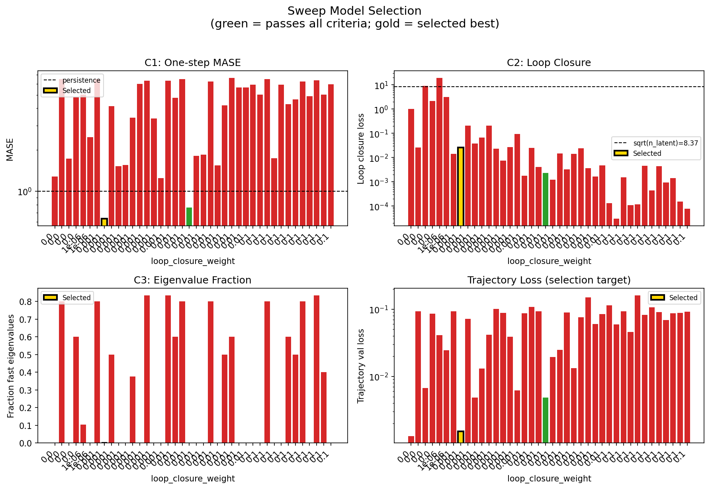
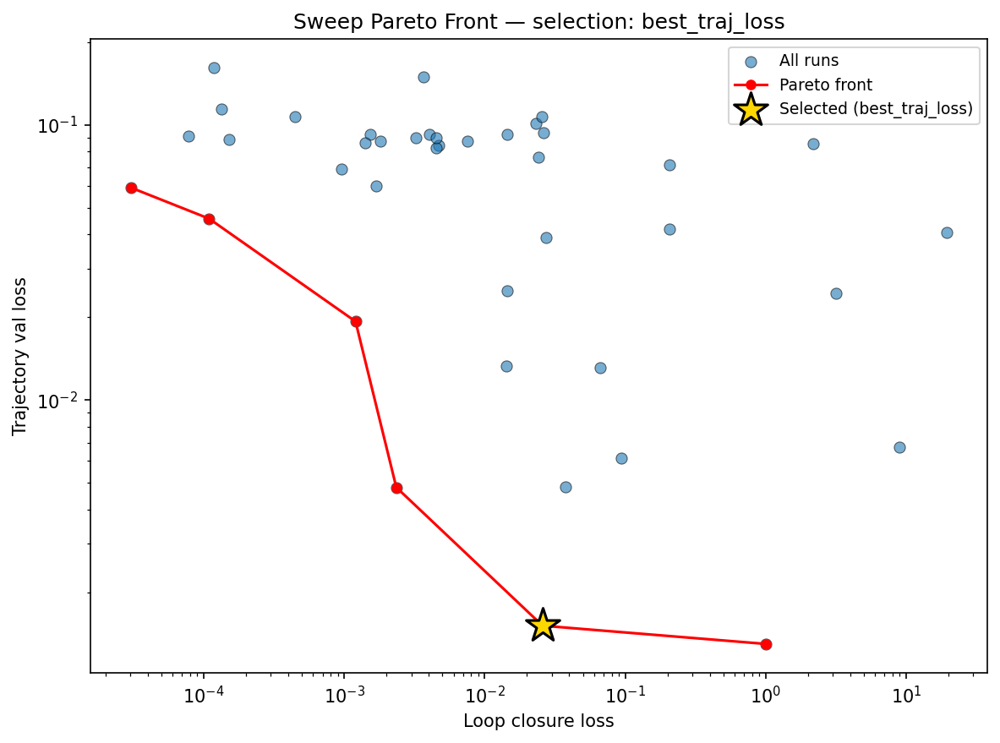
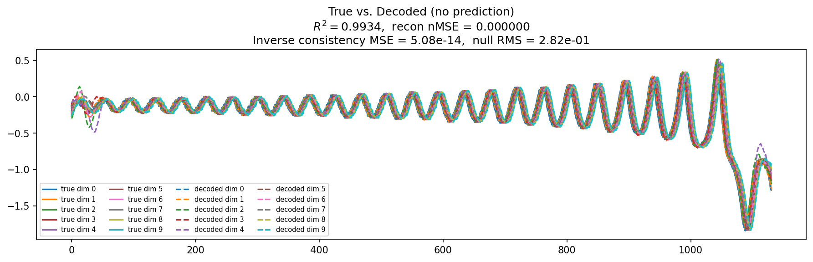
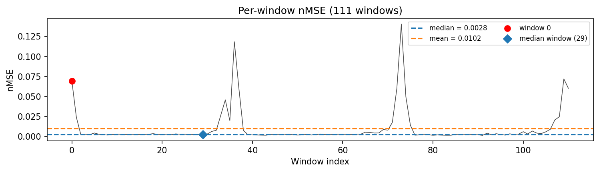
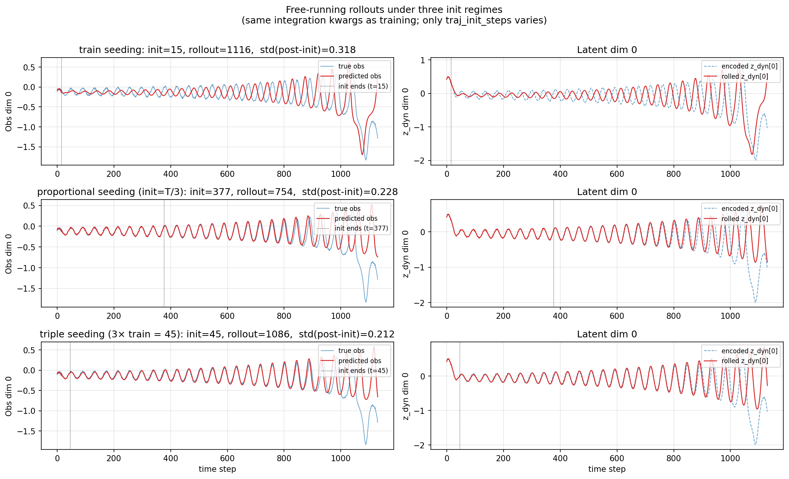
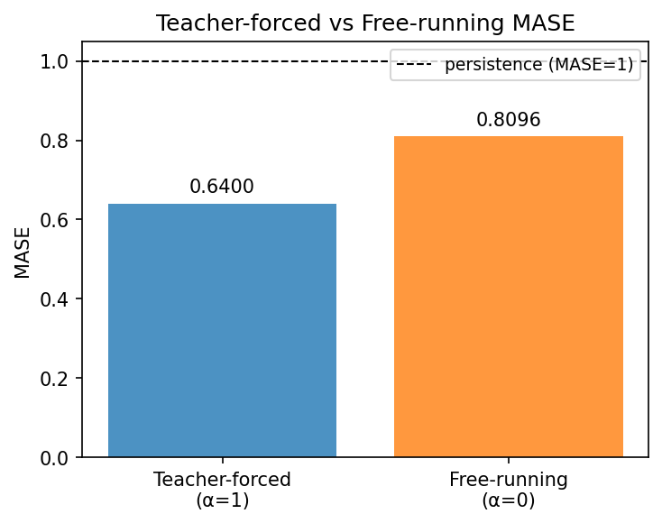
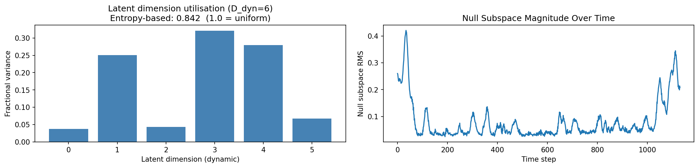
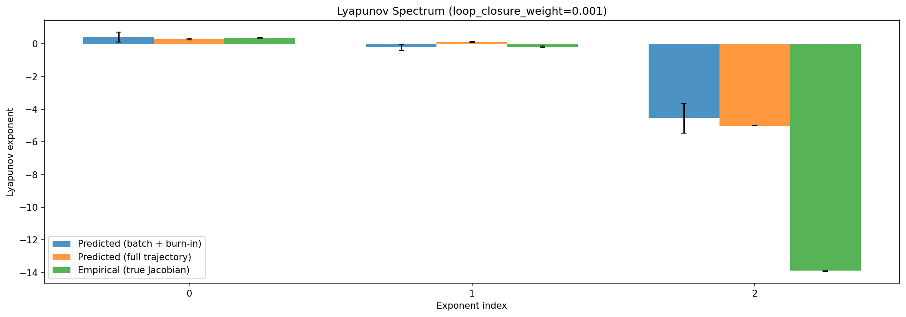
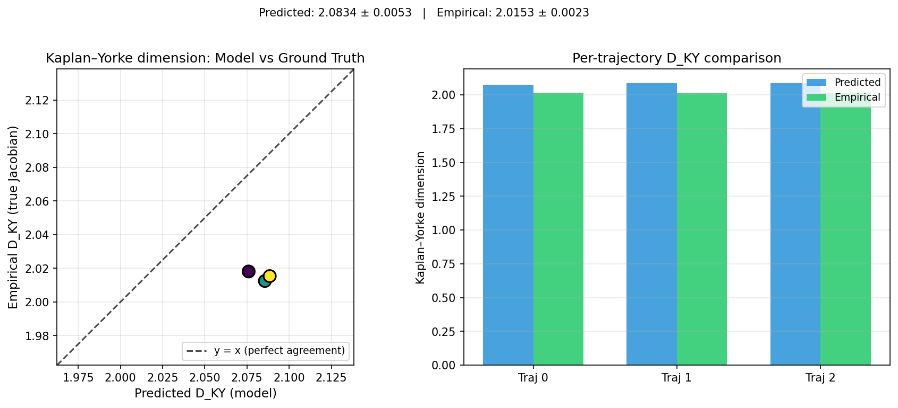
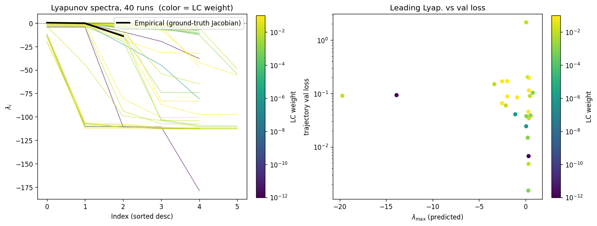
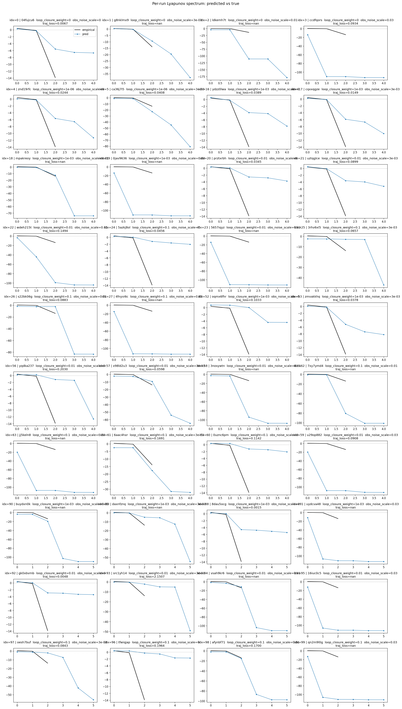
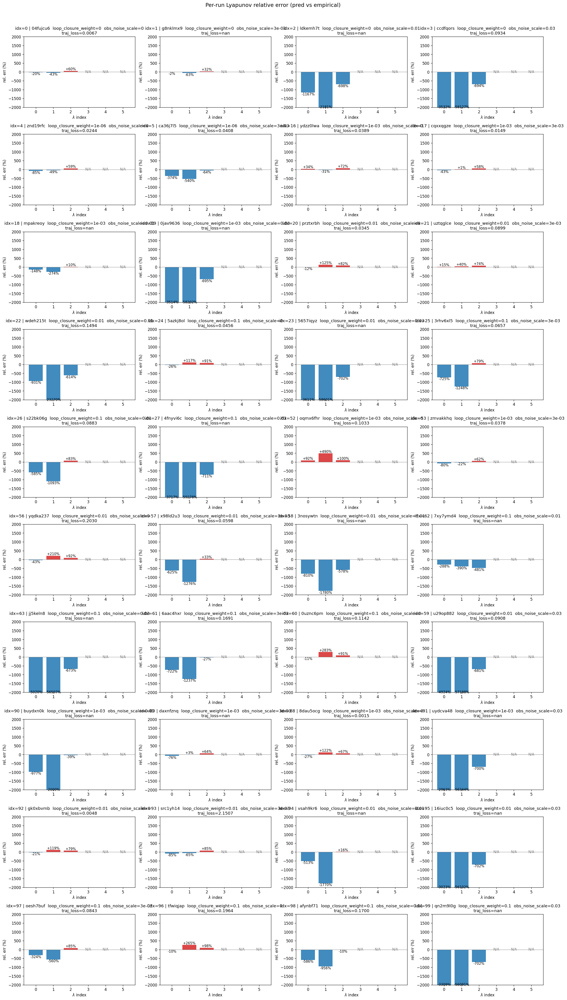
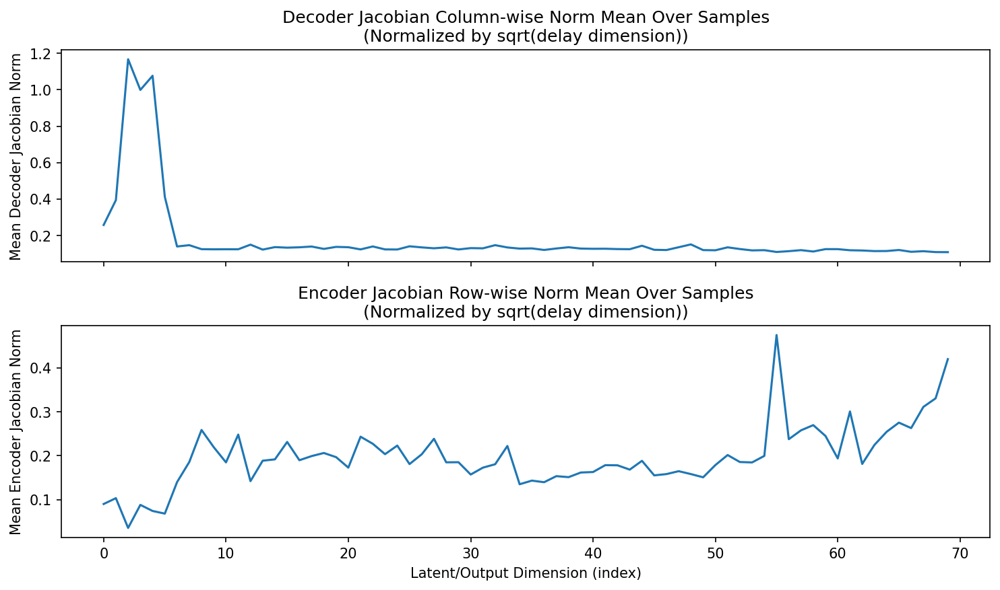
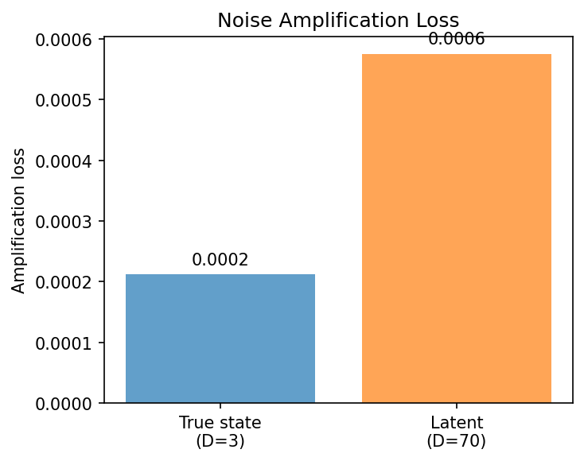
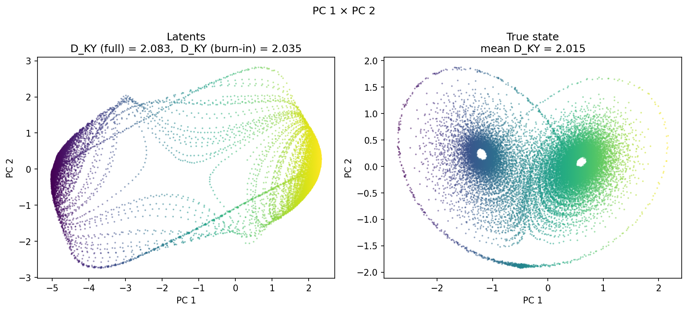
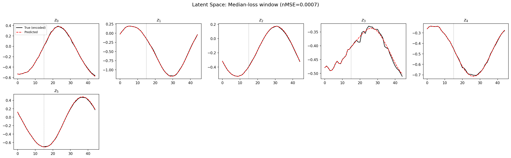
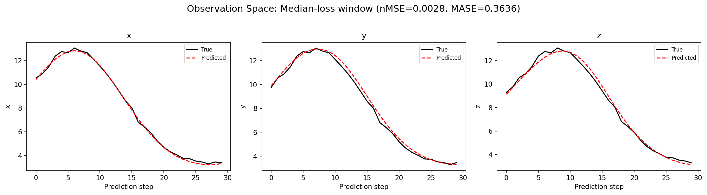
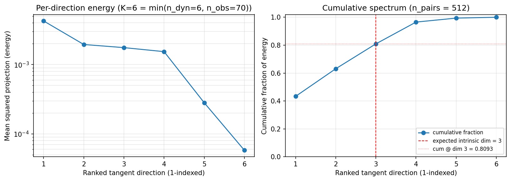
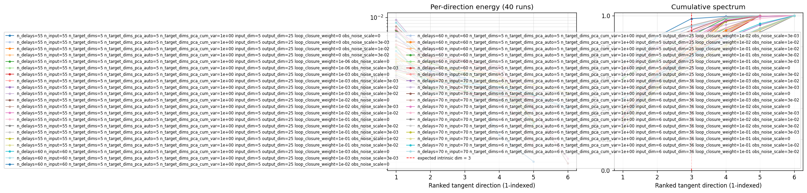
(to be written)
run_analytics stdoutrun_analyticsNo run_id provided — selecting best run from group 'lorenz_partial_additive_splitmode_p30_obsnoise001_top3nd_init15_autodim__lc_obsnoisescale_sweep' ...
Found 40 total runs in JacobianODE/Lorenz_INDpartial_NDInitSweep_autodim_D1_NormTrue__JacobianODE (group=lorenz_partial_additive_splitmode_p30_obsnoise001_top3nd_init15_autodim__lc_obsnoisescale_sweep)
All runs (state, loop_closure_weight, tangent_entropy_weight, kl_dyn_weight):
04fujcu6: state=finished, lc=0.0, te=0.0, kl_dyn=0.0
g8nklmx9: state=finished, lc=0.0, te=0.0, kl_dyn=0.0
ldkemh7t: state=finished, lc=0.0, te=0.0, kl_dyn=0.0
ccdfqors: state=finished, lc=0.0, te=0.0, kl_dyn=0.0
znd19rfc: state=finished, lc=1e-06, te=0.0, kl_dyn=0.0
ca36j7l5: state=finished, lc=1e-06, te=0.0, kl_dyn=0.0
ydzz0lwa: state=finished, lc=0.001, te=0.0, kl_dyn=0.0
cqxxqgze: state=finished, lc=0.001, te=0.0, kl_dyn=0.0
mpakreoy: state=finished, lc=0.001, te=0.0, kl_dyn=0.0
0jav9636: state=finished, lc=0.001, te=0.0, kl_dyn=0.0
prztxrbh: state=finished, lc=0.01, te=0.0, kl_dyn=0.0
uztqglce: state=finished, lc=0.01, te=0.0, kl_dyn=0.0
wdeh215t: state=finished, lc=0.01, te=0.0, kl_dyn=0.0
5azkj8ol: state=finished, lc=0.1, te=0.0, kl_dyn=0.0
5657iqyz: state=finished, lc=0.01, te=0.0, kl_dyn=0.0
3rhv6xl5: state=finished, lc=0.1, te=0.0, kl_dyn=0.0
s22bk06g: state=finished, lc=0.1, te=0.0, kl_dyn=0.0
4fnyvi6c: state=finished, lc=0.1, te=0.0, kl_dyn=0.0
oqmx6fhr: state=finished, lc=0.001, te=0.0, kl_dyn=0.0
zmvakkhq: state=finished, lc=0.001, te=0.0, kl_dyn=0.0
yqdka237: state=finished, lc=0.01, te=0.0, kl_dyn=0.0
x98ld2u3: state=finished, lc=0.01, te=0.0, kl_dyn=0.0
3nosywtn: state=finished, lc=0.01, te=0.0, kl_dyn=0.0
7xy7ymd4: state=finished, lc=0.1, te=0.0, kl_dyn=0.0
jj5keln8: state=finished, lc=0.1, te=0.0, kl_dyn=0.0
6aac4hxr: state=finished, lc=0.1, te=0.0, kl_dyn=0.0
0uznc6pm: state=finished, lc=0.1, te=0.0, kl_dyn=0.0
u29op882: state=finished, lc=0.01, te=0.0, kl_dyn=0.0
buydxn0k: state=finished, lc=0.001, te=0.0, kl_dyn=0.0
daxnfznq: state=finished, lc=0.001, te=0.0, kl_dyn=0.0
8dau5ocg: state=finished, lc=0.001, te=0.0, kl_dyn=0.0
uydcva48: state=finished, lc=0.001, te=0.0, kl_dyn=0.0
gk0xbvmb: state=finished, lc=0.01, te=0.0, kl_dyn=0.0
src1yh14: state=finished, lc=0.01, te=0.0, kl_dyn=0.0
vsah9kr6: state=finished, lc=0.01, te=0.0, kl_dyn=0.0
16iuc0c5: state=finished, lc=0.01, te=0.0, kl_dyn=0.0
oesh7buf: state=finished, lc=0.1, te=0.0, kl_dyn=0.0
tfwiqjap: state=finished, lc=0.1, te=0.0, kl_dyn=0.0
afynbf71: state=finished, lc=0.1, te=0.0, kl_dyn=0.0
qn2m9l0g: state=finished, lc=0.1, te=0.0, kl_dyn=0.0
slurm_timeout_min not found in any run config — falling back to 180 min
Including 04fujcu6 (lc=0.0): use_all_runs=True (state=finished)
Including g8nklmx9 (lc=0.0): use_all_runs=True (state=finished)
Including ldkemh7t (lc=0.0): use_all_runs=True (state=finished)
Including ccdfqors (lc=0.0): use_all_runs=True (state=finished)
Including znd19rfc (lc=1e-06): use_all_runs=True (state=finished)
Including ca36j7l5 (lc=1e-06): use_all_runs=True (state=finished)
Including ydzz0lwa (lc=0.001): use_all_runs=True (state=finished)
Including cqxxqgze (lc=0.001): use_all_runs=True (state=finished)
Including mpakreoy (lc=0.001): use_all_runs=True (state=finished)
Including 0jav9636 (lc=0.001): use_all_runs=True (state=finished)
Including prztxrbh (lc=0.01): use_all_runs=True (state=finished)
Including uztqglce (lc=0.01): use_all_runs=True (state=finished)
Including wdeh215t (lc=0.01): use_all_runs=True (state=finished)
Including 5azkj8ol (lc=0.1): use_all_runs=True (state=finished)
Including 5657iqyz (lc=0.01): use_all_runs=True (state=finished)
Including 3rhv6xl5 (lc=0.1): use_all_runs=True (state=finished)
Including s22bk06g (lc=0.1): use_all_runs=True (state=finished)
Including 4fnyvi6c (lc=0.1): use_all_runs=True (state=finished)
Including oqmx6fhr (lc=0.001): use_all_runs=True (state=finished)
Including zmvakkhq (lc=0.001): use_all_runs=True (state=finished)
Including yqdka237 (lc=0.01): use_all_runs=True (state=finished)
Including x98ld2u3 (lc=0.01): use_all_runs=True (state=finished)
Including 3nosywtn (lc=0.01): use_all_runs=True (state=finished)
Including 7xy7ymd4 (lc=0.1): use_all_runs=True (state=finished)
Including jj5keln8 (lc=0.1): use_all_runs=True (state=finished)
Including 6aac4hxr (lc=0.1): use_all_runs=True (state=finished)
Including 0uznc6pm (lc=0.1): use_all_runs=True (state=finished)
Including u29op882 (lc=0.01): use_all_runs=True (state=finished)
Including buydxn0k (lc=0.001): use_all_runs=True (state=finished)
Including daxnfznq (lc=0.001): use_all_runs=True (state=finished)
Including 8dau5ocg (lc=0.001): use_all_runs=True (state=finished)
Including uydcva48 (lc=0.001): use_all_runs=True (state=finished)
Including gk0xbvmb (lc=0.01): use_all_runs=True (state=finished)
Including src1yh14 (lc=0.01): use_all_runs=True (state=finished)
Including vsah9kr6 (lc=0.01): use_all_runs=True (state=finished)
Including 16iuc0c5 (lc=0.01): use_all_runs=True (state=finished)
Including oesh7buf (lc=0.1): use_all_runs=True (state=finished)
Including tfwiqjap (lc=0.1): use_all_runs=True (state=finished)
Including afynbf71 (lc=0.1): use_all_runs=True (state=finished)
Including qn2m9l0g (lc=0.1): use_all_runs=True (state=finished)
Found 40 effectively-done sweep runs:
loop_closure_weight=0.0, tangent_entropy_weight=0.0, kl_dyn_weight=0.0 -> run_id=04fujcu6
loop_closure_weight=0.0, tangent_entropy_weight=0.0, kl_dyn_weight=0.0 -> run_id=ccdfqors
loop_closure_weight=0.0, tangent_entropy_weight=0.0, kl_dyn_weight=0.0 -> run_id=g8nklmx9
loop_closure_weight=0.0, tangent_entropy_weight=0.0, kl_dyn_weight=0.0 -> run_id=ldkemh7t
loop_closure_weight=1e-06, tangent_entropy_weight=0.0, kl_dyn_weight=0.0 -> run_id=ca36j7l5
loop_closure_weight=1e-06, tangent_entropy_weight=0.0, kl_dyn_weight=0.0 -> run_id=znd19rfc
loop_closure_weight=0.001, tangent_entropy_weight=0.0, kl_dyn_weight=0.0 -> run_id=0jav9636
loop_closure_weight=0.001, tangent_entropy_weight=0.0, kl_dyn_weight=0.0 -> run_id=8dau5ocg
loop_closure_weight=0.001, tangent_entropy_weight=0.0, kl_dyn_weight=0.0 -> run_id=buydxn0k
loop_closure_weight=0.001, tangent_entropy_weight=0.0, kl_dyn_weight=0.0 -> run_id=cqxxqgze
loop_closure_weight=0.001, tangent_entropy_weight=0.0, kl_dyn_weight=0.0 -> run_id=daxnfznq
loop_closure_weight=0.001, tangent_entropy_weight=0.0, kl_dyn_weight=0.0 -> run_id=mpakreoy
loop_closure_weight=0.001, tangent_entropy_weight=0.0, kl_dyn_weight=0.0 -> run_id=oqmx6fhr
loop_closure_weight=0.001, tangent_entropy_weight=0.0, kl_dyn_weight=0.0 -> run_id=uydcva48
loop_closure_weight=0.001, tangent_entropy_weight=0.0, kl_dyn_weight=0.0 -> run_id=ydzz0lwa
loop_closure_weight=0.001, tangent_entropy_weight=0.0, kl_dyn_weight=0.0 -> run_id=zmvakkhq
loop_closure_weight=0.01, tangent_entropy_weight=0.0, kl_dyn_weight=0.0 -> run_id=16iuc0c5
loop_closure_weight=0.01, tangent_entropy_weight=0.0, kl_dyn_weight=0.0 -> run_id=3nosywtn
loop_closure_weight=0.01, tangent_entropy_weight=0.0, kl_dyn_weight=0.0 -> run_id=5657iqyz
loop_closure_weight=0.01, tangent_entropy_weight=0.0, kl_dyn_weight=0.0 -> run_id=gk0xbvmb
loop_closure_weight=0.01, tangent_entropy_weight=0.0, kl_dyn_weight=0.0 -> run_id=prztxrbh
loop_closure_weight=0.01, tangent_entropy_weight=0.0, kl_dyn_weight=0.0 -> run_id=src1yh14
loop_closure_weight=0.01, tangent_entropy_weight=0.0, kl_dyn_weight=0.0 -> run_id=u29op882
loop_closure_weight=0.01, tangent_entropy_weight=0.0, kl_dyn_weight=0.0 -> run_id=uztqglce
loop_closure_weight=0.01, tangent_entropy_weight=0.0, kl_dyn_weight=0.0 -> run_id=vsah9kr6
loop_closure_weight=0.01, tangent_entropy_weight=0.0, kl_dyn_weight=0.0 -> run_id=wdeh215t
loop_closure_weight=0.01, tangent_entropy_weight=0.0, kl_dyn_weight=0.0 -> run_id=x98ld2u3
loop_closure_weight=0.01, tangent_entropy_weight=0.0, kl_dyn_weight=0.0 -> run_id=yqdka237
loop_closure_weight=0.1, tangent_entropy_weight=0.0, kl_dyn_weight=0.0 -> run_id=0uznc6pm
loop_closure_weight=0.1, tangent_entropy_weight=0.0, kl_dyn_weight=0.0 -> run_id=3rhv6xl5
loop_closure_weight=0.1, tangent_entropy_weight=0.0, kl_dyn_weight=0.0 -> run_id=4fnyvi6c
loop_closure_weight=0.1, tangent_entropy_weight=0.0, kl_dyn_weight=0.0 -> run_id=5azkj8ol
loop_closure_weight=0.1, tangent_entropy_weight=0.0, kl_dyn_weight=0.0 -> run_id=6aac4hxr
loop_closure_weight=0.1, tangent_entropy_weight=0.0, kl_dyn_weight=0.0 -> run_id=7xy7ymd4
loop_closure_weight=0.1, tangent_entropy_weight=0.0, kl_dyn_weight=0.0 -> run_id=afynbf71
loop_closure_weight=0.1, tangent_entropy_weight=0.0, kl_dyn_weight=0.0 -> run_id=jj5keln8
loop_closure_weight=0.1, tangent_entropy_weight=0.0, kl_dyn_weight=0.0 -> run_id=oesh7buf
loop_closure_weight=0.1, tangent_entropy_weight=0.0, kl_dyn_weight=0.0 -> run_id=qn2m9l0g
loop_closure_weight=0.1, tangent_entropy_weight=0.0, kl_dyn_weight=0.0 -> run_id=s22bk06g
loop_closure_weight=0.1, tangent_entropy_weight=0.0, kl_dyn_weight=0.0 -> run_id=tfwiqjap
n_dims=55, n_latent=55, n_dyn=5, dt=0.0150
run=04fujcu6: DiagnosticMetrics(one_step_mase=1.2813475131988525, loop_closure_loss=1.0058362483978271, fast_eigenvalue_fraction=0.0, trajectory_val_loss=0.0012993683340027928) (from W&B history)
run=ccdfqors: DiagnosticMetrics(one_step_mase=6.524741172790527, loop_closure_loss=0.026195133104920387, fast_eigenvalue_fraction=0.800000011920929, trajectory_val_loss=0.09335947781801224) (from W&B history)
run=g8nklmx9: DiagnosticMetrics(one_step_mase=1.7265584468841553, loop_closure_loss=8.968255996704102, fast_eigenvalue_fraction=0.0, trajectory_val_loss=0.006720829755067825) (from W&B history)
run=ldkemh7t: DiagnosticMetrics(one_step_mase=4.796350955963135, loop_closure_loss=2.171123504638672, fast_eigenvalue_fraction=0.6000000238418579, trajectory_val_loss=0.08542829751968384) (from W&B history)
run=ca36j7l5: DiagnosticMetrics(one_step_mase=5.038619041442871, loop_closure_loss=19.425119400024414, fast_eigenvalue_fraction=0.10400000214576721, trajectory_val_loss=0.04076318442821503) (from W&B history)
run=znd19rfc: DiagnosticMetrics(one_step_mase=2.4764528274536133, loop_closure_loss=3.1595659255981445, fast_eigenvalue_fraction=0.0, trajectory_val_loss=0.02437620796263218) (from W&B history)
run=0jav9636: DiagnosticMetrics(one_step_mase=6.5261077880859375, loop_closure_loss=0.014374255202710629, fast_eigenvalue_fraction=0.800000011920929, trajectory_val_loss=0.09260010719299316) (from W&B history)
run=8dau5ocg: DiagnosticMetrics(one_step_mase=0.6324470043182373, loop_closure_loss=0.025805748999118805, fast_eigenvalue_fraction=0.0, trajectory_val_loss=0.001513456692919135) (from W&B history)
run=buydxn0k: DiagnosticMetrics(one_step_mase=4.142026424407959, loop_closure_loss=0.20525671541690826, fast_eigenvalue_fraction=0.5, trajectory_val_loss=0.07136120647192001) (from W&B history)
run=cqxxqgze: DiagnosticMetrics(one_step_mase=1.5156773328781128, loop_closure_loss=0.03779539465904236, fast_eigenvalue_fraction=0.0, trajectory_val_loss=0.004843705799430609) (from W&B history)
run=daxnfznq: DiagnosticMetrics(one_step_mase=1.5530072450637817, loop_closure_loss=0.06639079004526138, fast_eigenvalue_fraction=0.0, trajectory_val_loss=0.013094364665448666) (from W&B history)
run=mpakreoy: DiagnosticMetrics(one_step_mase=3.4289040565490723, loop_closure_loss=0.20790870487689972, fast_eigenvalue_fraction=0.37700000405311584, trajectory_val_loss=0.041700925678014755) (from W&B history)
run=oqmx6fhr: DiagnosticMetrics(one_step_mase=6.007996082305908, loop_closure_loss=0.023141250014305115, fast_eigenvalue_fraction=0.0, trajectory_val_loss=0.10111255943775177) (from W&B history)
run=uydcva48: DiagnosticMetrics(one_step_mase=6.351836204528809, loop_closure_loss=0.007582964841276407, fast_eigenvalue_fraction=0.8333333134651184, trajectory_val_loss=0.08743000775575638) (from W&B history)
run=ydzz0lwa: DiagnosticMetrics(one_step_mase=3.3681774139404297, loop_closure_loss=0.027452360838651657, fast_eigenvalue_fraction=0.0, trajectory_val_loss=0.03890116512775421) (from W&B history)
run=zmvakkhq: DiagnosticMetrics(one_step_mase=1.2416776418685913, loop_closure_loss=0.09433568269014359, fast_eigenvalue_fraction=0.0, trajectory_val_loss=0.006155155133455992) (from W&B history)
run=16iuc0c5: DiagnosticMetrics(one_step_mase=6.349637985229492, loop_closure_loss=0.0018095438135787845, fast_eigenvalue_fraction=0.8333333134651184, trajectory_val_loss=0.08726885169744492) (from W&B history)
run=3nosywtn: DiagnosticMetrics(one_step_mase=4.77309513092041, loop_closure_loss=0.02543240785598755, fast_eigenvalue_fraction=0.6000000238418579, trajectory_val_loss=0.10715625435113907) (from W&B history)
run=5657iqyz: DiagnosticMetrics(one_step_mase=6.5276265144348145, loop_closure_loss=0.0040204827673733234, fast_eigenvalue_fraction=0.800000011920929, trajectory_val_loss=0.09234458208084106) (from W&B history)
run=gk0xbvmb: DiagnosticMetrics(one_step_mase=0.7632865905761719, loop_closure_loss=0.002346318680793047, fast_eigenvalue_fraction=0.0, trajectory_val_loss=0.004816981963813305) (from W&B history)
run=prztxrbh: DiagnosticMetrics(one_step_mase=1.8012614250183105, loop_closure_loss=0.0012029423378407955, fast_eigenvalue_fraction=0.0, trajectory_val_loss=0.019294850528240204) (from W&B history)
run=src1yh14: DiagnosticMetrics(one_step_mase=1.837437629699707, loop_closure_loss=0.014524141326546669, fast_eigenvalue_fraction=0.0, trajectory_val_loss=0.02490363083779812) (from W&B history)
run=u29op882: DiagnosticMetrics(one_step_mase=6.259762763977051, loop_closure_loss=0.0032221931032836437, fast_eigenvalue_fraction=0.800000011920929, trajectory_val_loss=0.08958449959754944) (from W&B history)
run=uztqglce: DiagnosticMetrics(one_step_mase=1.5404243469238281, loop_closure_loss=0.014335793443024158, fast_eigenvalue_fraction=0.0, trajectory_val_loss=0.013315550051629543) (from W&B history)
run=vsah9kr6: DiagnosticMetrics(one_step_mase=4.205093860626221, loop_closure_loss=0.024000532925128937, fast_eigenvalue_fraction=0.5, trajectory_val_loss=0.0760834664106369) (from W&B history)
run=wdeh215t: DiagnosticMetrics(one_step_mase=6.654203414916992, loop_closure_loss=0.0036581598687916994, fast_eigenvalue_fraction=0.6000000238418579, trajectory_val_loss=0.14941734075546265) (from W&B history)
run=x98ld2u3: DiagnosticMetrics(one_step_mase=5.661190509796143, loop_closure_loss=0.00167664245236665, fast_eigenvalue_fraction=0.0, trajectory_val_loss=0.05977966636419296) (from W&B history)
run=yqdka237: DiagnosticMetrics(one_step_mase=5.653428077697754, loop_closure_loss=0.00471970159560442, fast_eigenvalue_fraction=0.0, trajectory_val_loss=0.08434343338012695) (from W&B history)
run=0uznc6pm: DiagnosticMetrics(one_step_mase=5.948256492614746, loop_closure_loss=0.00013407885853666812, fast_eigenvalue_fraction=0.0, trajectory_val_loss=0.11423677206039429) (from W&B history)
run=3rhv6xl5: DiagnosticMetrics(one_step_mase=5.01781702041626, loop_closure_loss=3.0349821827257983e-05, fast_eigenvalue_fraction=0.0, trajectory_val_loss=0.059079259634017944) (from W&B history)
run=4fnyvi6c: DiagnosticMetrics(one_step_mase=6.53120231628418, loop_closure_loss=0.0015290731098502874, fast_eigenvalue_fraction=0.800000011920929, trajectory_val_loss=0.09245116263628006) (from W&B history)
run=5azkj8ol: DiagnosticMetrics(one_step_mase=1.7377065420150757, loop_closure_loss=0.00010907267278525978, fast_eigenvalue_fraction=0.0, trajectory_val_loss=0.045601435005664825) (from W&B history)
run=6aac4hxr: DiagnosticMetrics(one_step_mase=5.93113374710083, loop_closure_loss=0.00011760569759644568, fast_eigenvalue_fraction=0.0, trajectory_val_loss=0.16102071106433868) (from W&B history)
run=7xy7ymd4: DiagnosticMetrics(one_step_mase=4.296416759490967, loop_closure_loss=0.004535811021924019, fast_eigenvalue_fraction=0.6000000238418579, trajectory_val_loss=0.08222471177577972) (from W&B history)
run=afynbf71: DiagnosticMetrics(one_step_mase=4.629033088684082, loop_closure_loss=0.00044502646778710186, fast_eigenvalue_fraction=0.5, trajectory_val_loss=0.10684191435575485) (from W&B history)
run=jj5keln8: DiagnosticMetrics(one_step_mase=6.262394905090332, loop_closure_loss=0.00449797697365284, fast_eigenvalue_fraction=0.800000011920929, trajectory_val_loss=0.0898948386311531) (from W&B history)
run=oesh7buf: DiagnosticMetrics(one_step_mase=4.900812149047852, loop_closure_loss=0.0009557268931530416, fast_eigenvalue_fraction=0.0, trajectory_val_loss=0.06929350644350052) (from W&B history)
run=qn2m9l0g: DiagnosticMetrics(one_step_mase=6.3650336265563965, loop_closure_loss=0.0014130589552223682, fast_eigenvalue_fraction=0.8333333134651184, trajectory_val_loss=0.08621865510940552) (from W&B history)
run=s22bk06g: DiagnosticMetrics(one_step_mase=5.032097339630127, loop_closure_loss=0.00015142455231398344, fast_eigenvalue_fraction=0.4000000059604645, trajectory_val_loss=0.08834338188171387) (from W&B history)
run=tfwiqjap: DiagnosticMetrics(one_step_mase=5.966620445251465, loop_closure_loss=7.827110675862059e-05, fast_eigenvalue_fraction=0.0, trajectory_val_loss=0.09109309315681458) (from W&B history)
Ranking method: best_traj_loss
Best run ID: 8dau5ocg
Best loop_closure_weight: 0.001
Best tangent_entropy_weight: 0.0
Best kl_dyn_weight: 0.0
Best traj loss: 0.001513
Criteria applied: ['C1', 'C2', 'C3']
Surviving: 2 / 40
Auto-selected run_id: 8dau5ocg
======================================================================
PARETO FRONTIER RUNS (6 runs)
======================================================================
Run ID LC Loss Traj Val Loss
------------ -------------- --------------
3rhv6xl5 0.000030 0.059079
5azkj8ol 0.000109 0.045601
prztxrbh 0.001203 0.019295
gk0xbvmb 0.002346 0.004817
8dau5ocg 0.025806 0.001513 <-- selected
04fujcu6 1.005836 0.001299
======================================================================
RANKING METHOD COMPARISON (over 2 survivors)
======================================================================
Method Run ID LC Loss Traj Val Loss
---------------------- ------------ -------------- --------------
best_traj_loss 8dau5ocg 0.025806 0.001513 <-- active
pareto_knee gk0xbvmb 0.002346 0.004817
geo_rank 8dau5ocg 0.025806 0.001513
minimax_rank 8dau5ocg 0.025806 0.001513
geo_log_score 8dau5ocg 0.025806 0.001513
minimax_log_score gk0xbvmb 0.002346 0.004817
======================================================================
Loading run 8dau5ocg from JacobianODE/Lorenz_INDpartial_NDInitSweep_autodim_D1_NormTrue__JacobianODE ...
Train dataset shape: torch.Size([23892, 45, 70])
Validation dataset shape: torch.Size([7602, 45, 70])
Test dataset shape: torch.Size([3258, 45, 70])
Train trajectories dataset shape: torch.Size([22, 1131, 70])
Validation trajectories dataset shape: torch.Size([7, 1131, 70])
Test trajectories dataset shape: torch.Size([3, 1131, 70])
Loading checkpoint epoch=64-step=13000.ckpt...
Computing reconstruction ...
Computing MASE ...
Teacher-forced MASE: 0.6400
Free-running MASE: 0.8096
Computing latent utilization ...
Entropy-based utilization: 0.842
Null subspace mean RMS: 1.063904e-01
Computing Lyapunov exponents ...
Computing full-trajectory Lyapunov (3 test trajs, T=1131) ...
Predicted Lyapunov exponents (batch+burn-in, 128 windowed trajs):
λ_1 = +0.4217 ± 0.2984
λ_2 = -0.1954 ± 0.1860
λ_3 = -4.5460 ± 0.9149
λ_4 = -4.8500 ± 0.8118
λ_5 = -5.0241 ± 0.7127
λ_6 = -5.3933 ± 0.6297
Predicted Lyapunov exponents (full-length, 3 test trajs):
λ_1 = +0.3030 ± 0.0584
λ_2 = +0.1141 ± 0.0304
λ_3 = -5.0029 ± 0.0134
λ_4 = -5.1655 ± 0.0147
λ_5 = -5.2238 ± 0.0150
λ_6 = -5.7430 ± 0.0165
Empirical Lyapunov exponents (mean ± std):
λ_1 = +0.3846 ± 0.0251
λ_2 = -0.1716 ± 0.0444
λ_3 = -13.8799 ± 0.0398
Mean KY dim (predicted): 2.083 ± 0.005
Mean KY dim (empirical): 2.015 ± 0.002
Mean KY dim (burn-in): 2.035 ± 0.136
Computing prediction windows ...
Windows: 111 — nMSE min=0.0016, median=0.0028, mean=0.0102, max=0.1404
Computing long-trajectory free-running rollouts ...
Computing encoder/decoder Jacobians ...
encoder_jacobian: (128, 70, 70)
decoder_jacobian: (128, 70, 70)
Computing amplification loss ...
Amplification loss — True state: 0.000212
Amplification loss — Latent: 0.000576
Computing tangent space spectrum ...